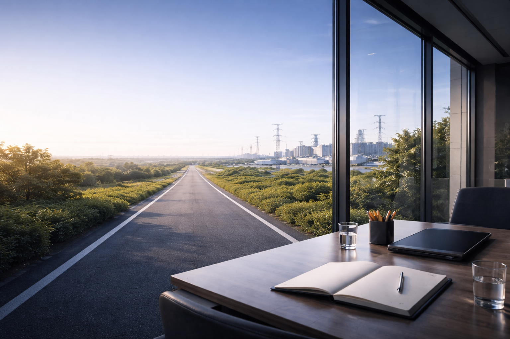

1. Ay: Analiz ve Teşhis
Kurumun enerji, karbon ve su verilerinin mevcut durumu (AS-IS) analiz edilir. Yasal riskler raporlanır.


Mevzuat uyumundan dijitalleşmeye giden yolda, 6 aylık stratejik uygulama planımız.
Kurumun enerji, karbon ve su verilerinin mevcut durumu (AS-IS) analiz edilir. Yasal riskler raporlanır.
Manuel veri toplama süreci sonlandırılır. IoT sensörleri ve dijital izleme yazılımları devreye alınır.
Verimlilik Artırıcı Projeler (VAP) ve GES yatırımları için fizibilite dosyaları hazırlanır.
Hazırlanan projeler için uygun hibe fonlarına (Dünya Bankası, AB, Kalkınma Ajansı) başvuru yapılır.
Saha montajları, cihaz kurulumları ve sistem entegrasyonları Kılıç Enerji teknik ekibiyle tamamlanır.
ISO 14064, ISO 50001 sertifikaları alınır ve Sürdürülebilirlik Raporu yayınlanır.